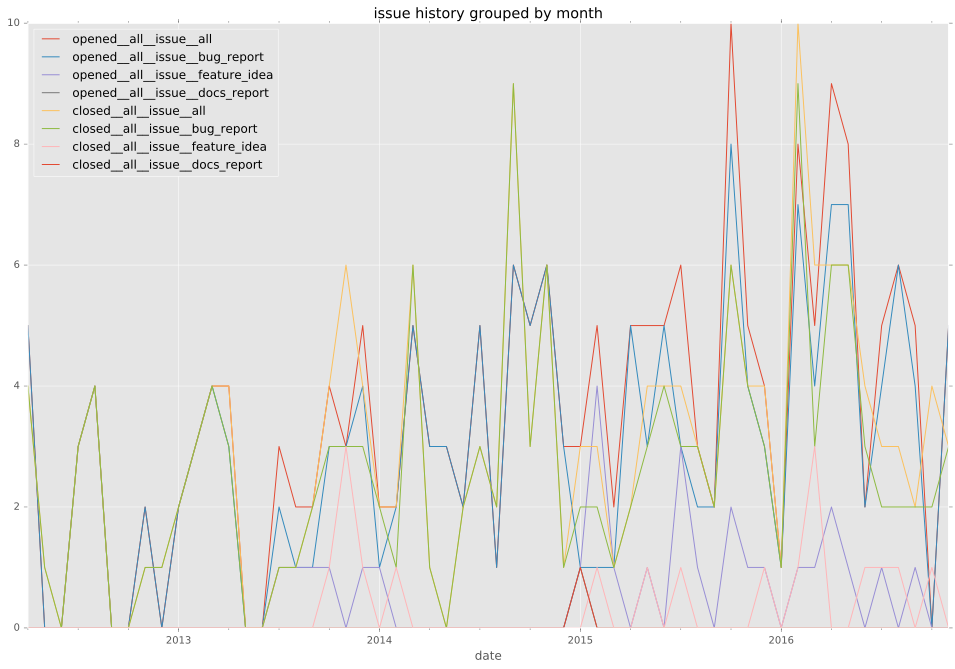
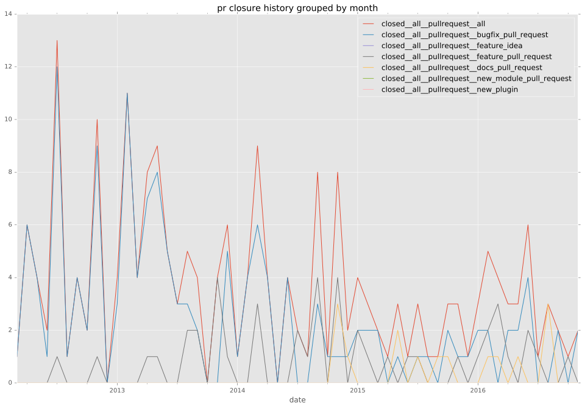

authors
- mgwilliams
maintainers
- ansible
contributors
- drewblas : 1 commits
- asolano : 13 commits
- lwade : 1 commits
- mattclay : 26 commits
- radeksimko : 1 commits
- do3cc : 1 commits
- dhozac : 5 commits
- ffiv : 1 commits
- madduck : 6 commits
- jpmens : 17 commits
- lamby : 7 commits
- resmo : 12 commits
- hlieberman : 4 commits
- jcbagneris : 1 commits
- serenecloud : 1 commits
- hfinucane : 1 commits
- dne : 6 commits
- mpdehaan : 20 commits
- JeanFred : 1 commits
- sfromm : 2 commits
- mgedmin : 1 commits
- mavimo : 18 commits
- eslng : 10 commits
- go2sh : 6 commits
- jctanner : 5 commits
- cmattson : 1 commits
- pm5 : 1 commits
- kireledan : 4 commits
- mvo5 : 9 commits
- srvg : 10 commits
- gundalow : 3 commits
- mscherer : 1 commits
- jeremysmitherman : 1 commits
- blair : 2 commits
- Jmainguy : 6 commits
- gerph : 1 commits
- Elemecca : 2 commits
- chrrrles : 7 commits
- amenonsen : 2 commits
- conrado : 16 commits
- kavink : 4 commits
- devjatkin : 3 commits
- FabioBatSilva : 12 commits
- lorin : 19 commits
- rsommer : 4 commits
- RealFatCat : 1 commits
- abadger : 38 commits
- hughsaunders : 1 commits
- goozbach : 2 commits
- sivel : 3 commits
- bcoca : 25 commits
- NielsH : 1 commits
- timurb : 5 commits
- towolf : 15 commits
- cloudnull : 11 commits
- gottwald : 7 commits
- marktheunissen : 7 commits
- jimi-c : 20 commits
total issue counts
unknown: 3
feature pull request: 33
docs report: 3
pullrequest: 171
docs pull request: 3
bugfix pull request: 131
feature idea: 23
issue: 112
bug report: 87
issue history

pullrequest history

days open by issue type
bugfix pull request
count: 213
std: 29.2067377195
min: 0
max: 305
median: 0.0
mean: 7.52582159624
all
count: 365
std: 75.3752617028
min: 0
max: 678
median: 0.0
mean: 25.3287671233
pullrequest
count: 0
std: nan
min: nan
max: nan
median: nan
mean: nan
docs pull request
count: 6
std: 9.81155781039
min: 0
max: 19
median: 0.0
mean: 6.33333333333
docs report
count: 4
std: 0.5
min: 0
max: 1
median: 0.0
mean: 0.25
feature pull request
count: 47
std: 112.844723159
min: 0
max: 497
median: 24.0
mean: 63.3617021277
feature idea
count: 14
std: 126.596985364
min: 0
max: 356
median: 66.0
mean: 122.214285714
issue
count: 0
std: nan
min: nan
max: nan
median: nan
mean: nan
bug report
count: 77
std: 103.01142024
min: 0
max: 678
median: 1.0
mean: 37.8311688312
closures grouped by total days open